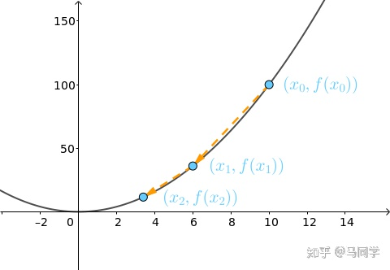

线性回归
线性回归是回归问题中的一种，线性回归假设目标值与特征之间线性相关，即满足一个多元一次方程。通过构建损失函数，来求解损失函数最小时的参数w和b。一般表达式如下：
y^为预测值，目标为求解线性模型中w和b两个参数。
损失函数
求解最佳参数，需要一个标准来对结果进行衡量，为此我们需要定量化一个目标函数式，使得计算机可以在求解过程中不断地优化。
在这里，我们定义的损失函数为：预测值y^ 与真实值y之间的平均平方距离差值，统计中一般称其为MAE(mean square error)均方误差：
为什么不用绝对值？绝对值的数学处理过程，比平方和的处理要复杂得多
把之前的函数式代入损失函数，并且将需要求解的参数w和b看做是函数L的自变量，可得：
现在的任务是求解最小化L时w和b的值，即核心目标优化式为：
求解方式
1.最小二乘法(Ordinary Least Squares)
求解 w 和 b 是使损失函数最小化的过程。简单来说，多元函数求极值就是最小二乘法的思想，求偏导并使偏导为0是最小二乘法的核心方法。
最小二乘是使所有观测值到回归直线距离的平方和最小，在这里我们引申为观测值距离实际值最小，观测值距离实际值的距离可认为是三角形的斜边。
在统计中，称为线性回归模型的最小二乘“参数估计”(parameter estimation)。我们可以将 L(w,b) 分别对 w 和 b 求导，得到：
两式为0时即为最优解。求解过程如下：
由于目标函数为凸函数，凸函数的任何极小值也是最小值。
a. 对b求偏导
b. 对w(a)求偏导
将求得的b代入得：
移动可得w(a)：
对w(a)进行整理：

最终得到w(a)和b的表达式：
2.梯度下降法(Gradient Descent)
梯度下降是迭代法的一种，可以用于求解最小二乘问题（线性和非线性都可以）。梯度下降法的计算过程就是沿着梯度下降的方向求解极小值。
由于在实操中代码无法自动求解方程，且最小二乘法若表示成矩阵形式，涉及逆矩阵计算的计算量很大。而梯度下降法可以很好地解决大数据量下的计算问题，并且由于凸函数的性质，一定存在最小值，因此更加值得被使用
我们重新来整理一下要求解的问题：
注：1/2m系数是刻意修改的，原本为m。这样处理是考虑到后面求导的时候会乘2，使1/2m*2变为1。
为了更直观和通俗易懂，下面将花相当一部分篇幅讲解一维情况下梯度下降法的原理，先从最简单的凸函数 开始讲起。
梯度向量
假设起点在 处，也就是将球放在
：
它的梯度为 1 维向量：
这是在 轴上的向量，它指向函数值增长最快的方向，而
就指向减少最快的方向：
将 也看作 1 维向量
，通过和
相加，可以将之向
移动一段距离得到新的向量
：
其中 称为步长，通过它可以控制移的动距离，本节设
，那么：
此时小球（也就是起点）下降到了 这个位置：
迭代
的梯度为：
继续沿着梯度的反方向走：
小球就滚到了更低的位置：

重复上述过程到第 10 次，小球基本上就到了最低点，即有 ：
步长
上面谈到了可以通过步长 来控制每次移动的距离，下面来看看不同步长对最终结果的影响。
| 过小 | 合适 | 过大 |
|---|---|---|
| 如果设 |
上面例子中用的 |
如果令 |
总结
总结下，不同的步长 ，随着迭代次数的增加，会导致被优化函数
的值有不同的变化

寻找合适的步长 是个手艺活，在工程中可以将上图画出来，根据图像来手动调整：
往上走（红线），自然是
过大，需要调低
一开始下降特别急，然后就几乎没有变化（棕线），可能是
较大，需要调低
几乎是线性变化（蓝线），可能是
过小，需要调高
3.最小二乘法与梯度下降法对比
实现方法和结果不同：最小二乘法是直接对求导找出全局最小，是非迭代法。而梯度下降法是一种迭代法，先给定一个
，然后向
下降最快的方向调整
，在若干次迭代之后找到局部最小。梯度下降法的缺点是到最小点的时候收敛速度变慢，并且对初始点的选择极为敏感，其改进大多是在这两方面下功夫。